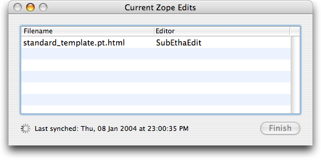

Zem is an implementation of Casey Duncan's excellent External Editor for Mac OS X, providing Mac users with flexibility in their choice of content-specific editors, and as many concurrent editors as they need running at the same time.
Taking Casey's work, and adapting it for Mac OS X users using the PyObjC bridge, I provide the same functionality, but in a native Mac OS X application with an intuitive graphical user interface. This means that you can specify any Mac OS X application (Carbon or Cocoa) to act as the editor for a MIME type, type group, or Zope meta_type. And you can have as many concurrent edits as you like, since all edits are handled through Zem.
Drag the ZopeEditManger application to the Applications folder in your hard drive or home directory. You can use the built-in preferences, one of the supplied preference files, or edit your own.
As you download links from the Zope Management Interface (ZMI) or the Content Management Framework (CMF) or Plone, new documents will accumulate in the main table.

As saves are made in the editor, Zem will synch those changes back to the server, and display the time of the last synch. To remove a document from Zem, simply select it from the table, and click the 'Finish' button, or press the 'delete' key.
Currently, the only browser fully set to work with Zem is Mozilla. Internet Explorer supports the configuration of File Helpers, but I've been unable to get it working quite right. In any case, other browsers will download a particular file. That file can be dragged onto the Zem icon and it will work fine. To enable Zem in Mozilla, select the Helper Applications pane from the Navigator group, and create a New Type called 'application/x-zope-edit', and choose Zem with the Application picker.
Zem provides a GUI Preferences panel. Just choose "Preferences..." from the Zem menu, or press Command-, to open the window.
The available options for Zem are (names in parentheses are the corresponding key names in the Preferences plist):
cleanup_files)confirm_on_finish)save_interval)temp_dir)use_locks)always_borrow_locks)To edit an entry, simply double click on the cell, and edit. To add a new Helper App, click the '+' button. To remove an entry, select a row, and click '-'. You can sort the table by any of the columns, ascending or descending.
extension)editor)I would like to thank the following people for their help in this endeavor:
I hope you enjoy using this software. If you have any comments, suggestions or would like to report a bug, send an email with 'Zem' in the Subject line to the author:
Zachery Bir <zbir@urbanape.com>
© 2003-2005, Zachery Bir and Zope Corporation. All rights reserved.